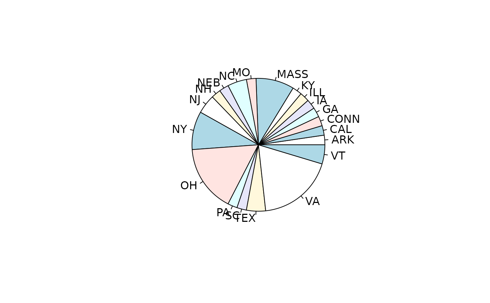
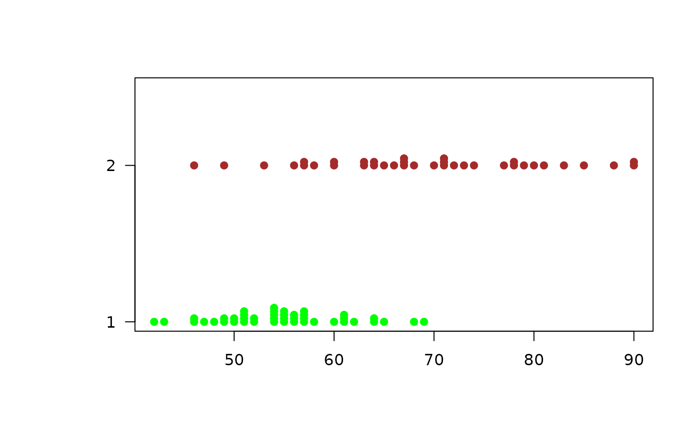

Data for Exercise 1.126
PresidenA data frame/tibble with 43 observations on five variables
a factor with levels A., B.,
C., D., F., G., G. W., H., J.,
L., M., R., T., U., W., and Z.
a factor with levels Adams, Arthur,
Buchanan, Bush, Carter, Cleveland, Clinton,
Coolidge, Eisenhower, Fillmore, Ford,
Garfield, Grant, Harding, Harrison, Hayes,
Hoover, Jackson, Jefferson, Johnson, Kennedy,
Lincoln, Madison, McKinley, Monroe, Nixon,
Pierce, Polk, Reagan, Roosevelt, Taft,
Taylor, Truman, Tyler, VanBuren, Washington, and
Wilson
a factor with levels ARK,
CAL, CONN, GA, IA, ILL, KY, MASS,
MO, NC, NEB, NH, NJ, NY, OH,
PA, SC, TEX, VA, and VT
President's age at inauguration
President's age at death
Kitchens, L. J. (2003) Basic Statistics and Data Analysis. Pacific Grove, CA: Brooks/Cole, a division of Thomson Learning.
pie(xtabs(~birth_state, data = Presiden))

stem(Presiden$inaugural_age)
#>
#> The decimal point is 1 digit(s) to the right of the |
#>
#> 4 | 23
#> 4 | 667899
#> 5 | 0011112244444
#> 5 | 555566677778
#> 6 | 0111244
#> 6 | 589
#>
stem(Presiden$death_age)
#>
#> The decimal point is 1 digit(s) to the right of the |
#>
#> 4 | 69
#> 5 | 3
#> 5 | 6778
#> 6 | 003344
#> 6 | 567778
#> 7 | 0111234
#> 7 | 7889
#> 8 | 013
#> 8 | 58
#> 9 | 00
#>
par(mar = c(5.1, 4.1 + 3, 4.1, 2.1))
stripchart(x=list(Presiden$inaugural_age, Presiden$death_age),
method = "stack", col = c("green","brown"), pch = 19, las = 1)

par(mar = c(5.1, 4.1, 4.1, 2.1))